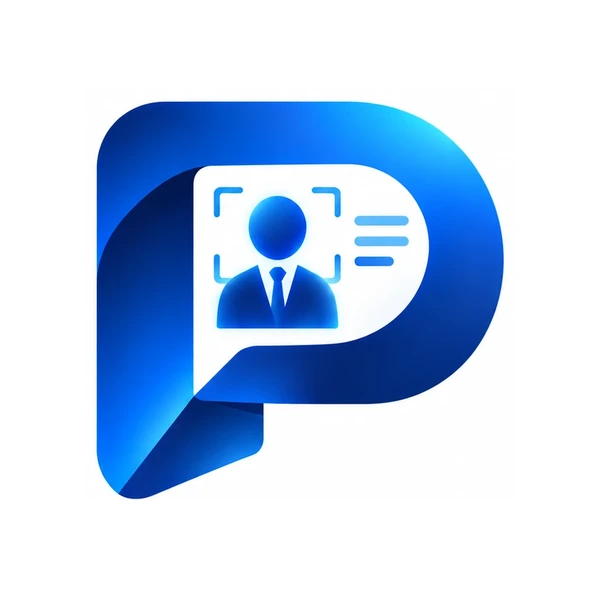

常連さんのボトル、月末にまとめて払ってもらうツケ、カラオケ代。スナックの売上は、ノートと電卓で管理しているお店がまだ多い一方で、「ボトルの期限を過ぎていた」「ツケの残りがわからない」といった悩みも出やすいところです。
この記事では、スナックの料金と売上のしくみ、1日の売上のつけ方、ボトルキープとツケの管理、そして確定申告に向けた準備をまとめました。ママ1人のお店から、スタッフのいるお店まで使える内容です。
この記事でわかること
- スナックの料金（セット・延長・ボトル・サービス料）と売上のしくみ
- 閉店後に何を記録すればいいか
- ボトルキープとツケを、もれなく管理するコツ
- 確定申告に向けて残しておくもの
スナックの料金と売上のしくみ
売上の中心は常連さんです。誰が、いつ来て、何を飲んだかを残しておくことが、ボトルやツケの管理にも、次の来店につなげることにも役立ちます。
1日の売上のつけ方
閉店後は、伝票ごとの売上を合計し、支払い方法ごとに分けて記録します。ある日のスナック（架空の例）で見てみます。
| 項目内わけ | 金額 |
|---|---|
| セット料金3,000円 × 14人 | 42,000円 |
| 延長1,500円 × 4人 | 6,000円 |
| ボトル新しく入ったボトル 2本 | 16,000円 |
| ドリンク・フード・カラオケ | 21,000円 |
| この日の売上 | 85,000円 |
| うち 現金 | 52,000円 |
| うち カード・電子マネー | 18,000円 |
| うち ツケ（売掛）あとで回収 | 15,000円 |
レジの現金は、「釣り銭の準備金 ＋ 現金の売上 ＋ ツケの回収 − 現金で払った経費」と合っているかを確かめます。ツケの分は現金がレジに入らないので、売上とは別に「回収待ち」として残しておくのがポイントです。

ボトルキープとツケの管理
ボトルキープ
- 誰の、どのボトルかお客さまの名前と、銘柄・入れた日を記録します。ボトルのタグと記録の番号をそろえると探しやすくなります。
- 残りの量来店のたびに、だいたいの残りを記録しておくと、次のボトルをすすめるタイミングがわかります。
- 期限期限を決めているお店は、期限の日を記録し、近いボトルをお客さまに伝えます。延長したときも記録を更新します。
ツケ（売掛）
- いつ・誰が・いくら日付・お客さま・金額・内わけを残します。
- 回収の予定と記録いつまでに払ってもらうかを決め、回収したら日付と金額を記録します。一部回収のときは残りも。
- 無理のない範囲でツケが大きくなりすぎると、回収できなくなったときのお店の負担も大きくなります。上限を決めておくお店もあります。
帳簿と確定申告の準備
個人でスナックを営業している場合は、毎年の確定申告が必要です。申告の時期にあわてないために、日ごろから次のものを残しておきます。
申告の方法や経費の範囲は、税理士や税務署にご確認ください。
POSで売上管理をかんたんにする
スマホやタブレットで使えるPOSなら、レジ台を置かなくても始められます。たとえばポスポスでは、次のことができます。
料金は月額（税込）で、ライトプラン 11,000円、スタンダードプラン キャンペーン価格 33,000円（通常価格 40,000円）、個別プラン 55,000円〜（料金は1店舗ごと）。初期費用は0円で、無料で1か月お試しできます。
よくある質問
ママ1人のスナックでもPOSシステムは必要ですか？
必須ではありませんが、ボトルキープやツケが増えてくると、ノートだけでは期限切れや回収もれが起きやすくなります。スマホやタブレットで使えるPOSなら、レジ台がなくても始められます。
ボトルキープの期限はどのくらいが一般的ですか？
お店ごとに決めるもので、決まった長さはありません。大切なのは、期限をお客さまに伝えておき、期限が近いボトルに気づけるようにしておくことです。
ツケ（売掛）はどう記録すればいいですか？
日付・お客さま・金額・内わけ・回収の予定日を残し、回収したら日付と金額を記録します。一部だけ回収したときも、残りがいくらかわかるようにしておきます。
確定申告のために何を残しておけばいいですか？
毎日の売上、仕入れ（お酒・おつまみなど）や家賃などの経費の領収書、ツケの記録などです。日々の売上を記録しておくと、申告の作業がぐっと楽になります。くわしくは税理士や税務署にご確認ください。
ポスポスはスナックで使えますか？
使えます。セット料金・延長・サービス料の会計、ボトルキープの残り・期限・延長、売掛（ツケ）の一覧と回収、顧客カルテ、日報まで管理できます。パソコン・タブレット・スマホで使えます。
ボトルも、ツケも。ポスポスひとつで。
この記事からのお申し込み特典商品・写真・スタッフの登録代行が無料（通常は別途お見積もり）
月額11,000円〜・初期費用0円。無料で1か月お試しできます。
※ 記事中の計算例・お店の例は説明のための架空のものです。機能や料金は2026年10月時点の内容です。